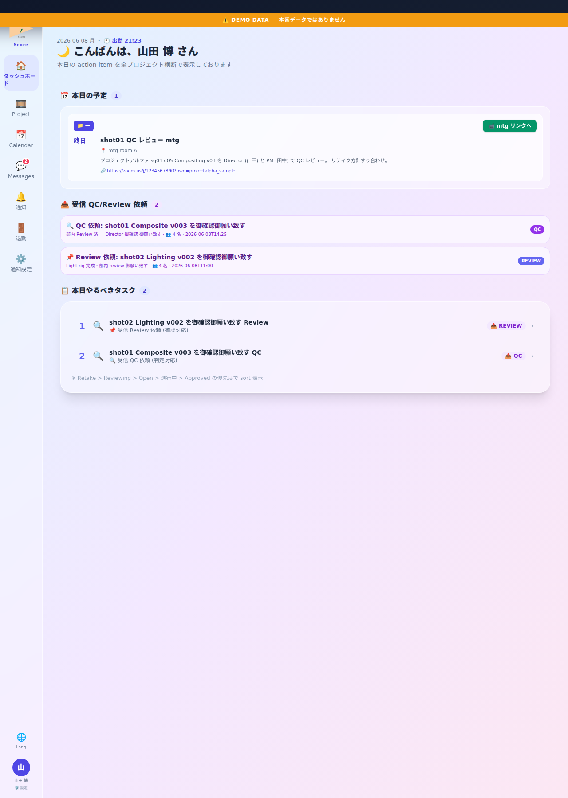
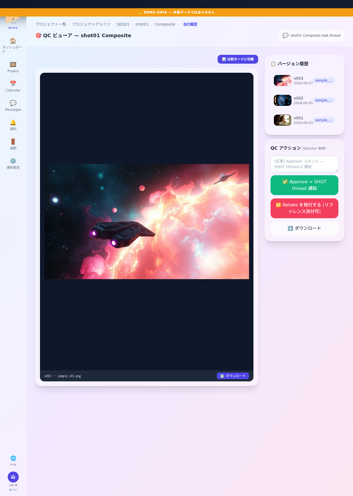
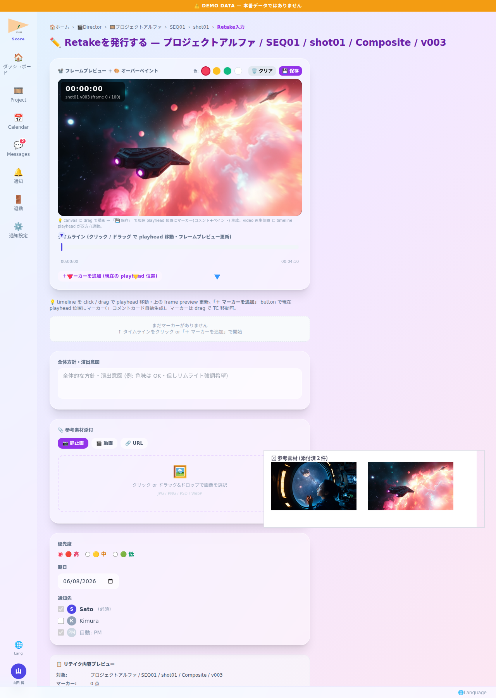

📌 このロールが Score でできること
- ▸QC ビューアで Approve/Retake 判定 (Director 専用権限)
- ▸Retake 発令 page で 作業指示 (全体方針・マーカー・参考素材) を User に具体的に伝達
- ▸全 SHOT QC 状況を Director ダッシュボードで集約把握 → 判定順を効率化
- ▸SHOT thread 経由で User/Lead と作業指示・修正方針を直接やり取り
- ▸視点切替 (admin の場合) で各 role の見え方を即時 preview
💡 1 日の流れ — 架空 project「桜咲く街」(TV アニメ・第 3 話 制作中) を例に
山田 Director は「桜咲く街」の作業指示と QC 判定を担当。朝の QC 依頼確認 → QC ビューアで Approve/Retake 判定 → リテイクは具体的な作業指示を記述して発令 → User との thread でフォローアップ → 退勤。
ログイン・朝のルーティン

📸 画面例: 山田 Director 朝の体調🤩 → 桜咲く街 QC 依頼 7 件を確認
💬 例えば
例えば 月曜朝に QC 依頼 7 件溜まっていれば、 優先度 (締切迫る → 進捗ブロック) で判定順を組み立てる。 体調🤒 の日は 判定数を絞り Lead に部分委譲する判断も。
Director ダッシュボード

📸 画面例: 桜咲く街 sq01 c05 Compositing QC 依頼 → click で qc_viewer 遷移
💬 例えば
例えば 紫 card に「🔍 桜咲く街 sq01 c05 QC 依頼 (佐藤花子 → 山田博)」 と表示されたら、 click 1 回で qc_viewer に直行。 thread 経由の Review 依頼は 📌 アイコンで識別。
QC ビューア (Approve/Retake 判定)

📸 画面例: 桜咲く街 sq01 c05 v04 を視聴 → ライティング微調整必要 → 🔁 Retake click
💬 例えば
例えば v04 を視聴 → 桜花のピンクが薄いと感じたら、 version 履歴で v03 と比較 → v03 の方が良い箇所を特定 → 🔁 Retake click で具体的な作業指示画面へ。 問題なしなら ✅ Approve でその場で完了。
Retake 発令 page (作業指示の中核)

📸 画面例: 「桜並木の桜花 ピンク 10% 強め」記入 + リファレンス画像添付 → 発令
💬 例えば
例えば「桜花のピンクが弱い」 だけだと User は迷う。 → 全体方針「ピンク 10% 強化」 + 0:12 マーカー保存 + 参考画像「絵コンテ第 3 話 sq01」 + 期日 = 明日18:00 と入力すると、 修正方針が明確に。 User の /retake_view で全て確認できる。
メッセージ・SHOT thread

📸 画面例: 桜咲く街 sq01 c05 thread で佐藤 User に追加指示
💬 例えば
例えば Retake 発令後 User から「桜花のピンクは色相 H=350°でよいか」 と質問が来た場合、 thread で「H=345°がベスト・参考画像 v2 添付」 と即返信。 Retake 発令 page を再度開かなくても thread で補足指示が完結する。
リファレンス管理

📸 画面例: 桜咲く街 全話 color script (5 枚) アップ → 全 User 参照可
💬 例えば
例えば 第 3 話 color script を新たに更新したら、 リファレンス page で upload → 全 SHOT thread に自動通知 → 各 User の Dashboard に「新リファレンス追加」 表示。 Retake 発令時にも参考素材として addable。
ヘルプ・チュートリアル
📸 画面例: 新 Director 着任時 30 分で全機能習得可能
💬 例えば
例えば 副 Director として山下氏が着任した時、 サイドメニュー「ヘルプ」 → 「Director 1 日業務動線」 page を 30 分閲覧 → 朝のルーティンから Retake 発令まで全 flow を把握 → 即実務 OK。
退勤報告

📸 画面例: 山田 Director「sq01 全 12 SHOT 判定完了・sq02 は明日」 提出
💬 例えば
例えば 「本日: sq01 全 12 SHOT 判定 (Approve 10 / Retake 2) / 明日: sq02 全 14 SHOT 着手予定 / 引継: sq01 c05 と sq01 c08 の Retake 確認」 と記入。 副 Director が翌朝即引き継げる。